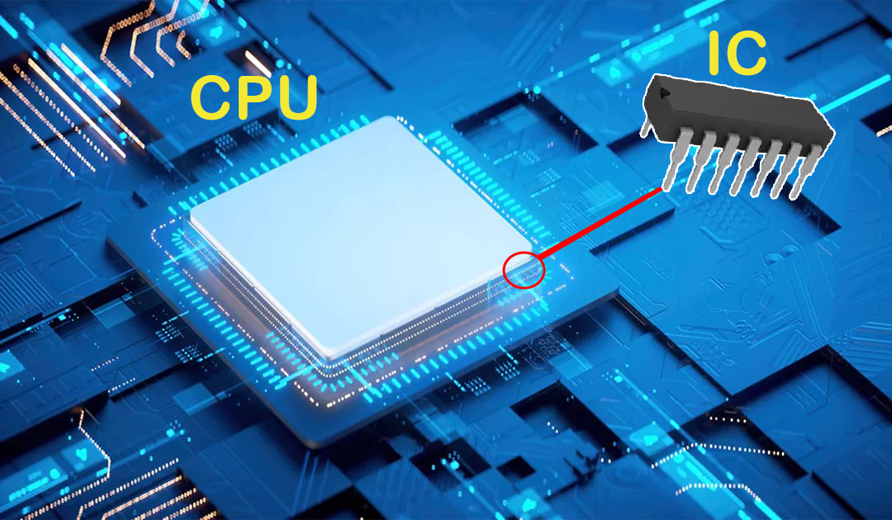

say you're living out on a farm, and you've got a bunch of chickens to
tend to on a nice plot of land. Each morning you wake up, open the
gate to your farm, and let your chickens loose out in your pasture.
This gate is your method of controlling the flow of chickens into and
out of your farm and helps you to meet your goals of having happy and
healthy creatures that continue laying eggs for years on end.
In a computer, we can also use a gate to control a flow and achieve an
end goal, but instead of chicke ns, we control the flow of an electric
current,Logic Gate is a device that acts as a building block for
digital circuits. it performs basic logical functions that are
fundamental to digital circuits.
Contant
Wherever you look in the world of digital electronics, you've got
logic gates at play, doing all of the heavy mathematical lifting to
make some amazing things happen.The production of ICs continued to
advance though, soon cramming in 4,800 transistors in the first
microprocessor in 1974 made by Intel. Today, we're in the age of very
large-scale integrated (VLSI) ICs, which can pack in millions and even
billions of transistors into one tiny package
